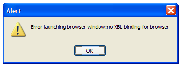

<?php
    // The $body_* variables are for compatibility with pre-existing css
    $page_title = "Firefox Won't Start!!!";
    $body_id    = 'mozilla-com';

    $breadcrumbs = array(
        "Release Notes" => "/{$lang}/firefox/releases/",
    );

    $extra_headers = <<<EXTRA_HEADERS

EXTRA_HEADERS;

    @include_once "{$config['file_root']}/{$lang}/includes/header.inc.php";

?>

    <div id="content">
      
    <!-- Introduction -->
    <h1>Firefox Won't Start!</h1>
  
    <p>So you've downloaded and installed Firefox 0.8 and when you try 
       to start it you get one of these messages:</p>
       
    <h3>Error launching browser window:no XBL binding for browser</h3>
    <p></p>
    
    <p>This is happening because you have an incompatible extension 
       installed from a previous version of Firefox, Firebird or Phoenix - 
       such as Tabbrowser Extensions.</p>
       
    <h2>How to Fix</h2>
    
      <h3>On Windows:</h3>
      
      <ol>
        <li>Open <strong>My Computer</strong>.</li>
        <li>Open <strong>Local Disk (C)</strong> (or wherever your profile data is stored).
            (<a href="xblerror/findingprofile-1.png">Show Me</a>)
        </li>
        <li>Open <strong>Documents and Settings</strong>.
            (<a href="xblerror/findingprofile-2.png">Show Me</a>)
        </li>
        <li>Open the folder whose name is your Windows user name.
            (<a href="xblerror/findingprofile-3.png">Show Me</a>)
        </li>
        <li>Open the <strong>Tools</strong> menu and click <strong>Options...</strong>
            (<a href="xblerror/findingprofile-4.png">Show Me</a>)
        </li>
        <li>Click the <strong>View</strong> tab and ensure <strong>Show hidden files 
            and folders</strong> is selected in the <strong>Advanced settings:</strong> 
            section. Click <strong>OK</strong> to close the panel.
            (<a href="xblerror/findingprofile-5.png">Show Me</a>)
        </li>
        <li>A folder called <strong>Application Data</strong> should be visible. Open
            it.
            (<a href="xblerror/findingprofile-6.png">Show Me</a>)
        </li>
        <li>Open the <strong>Phoenix</strong> folder
            (<a href="xblerror/findingprofile-7.png">Show Me</a>)
        </li>
        <li>Open the <strong>Profiles</strong> folder
            (<a href="xblerror/findingprofile-8.png">Show Me</a>)
        </li>
        <li>Open the folder called <strong>default</strong>. (If you are using another
            Firefox profile, open the folder matching the name of the Firefox profile 
            you are using.)
            (<a href="xblerror/findingprofile-9.png">Show Me</a>)
        </li>
        <li>Open the folder whose name contains a strange sequence of characters
            and a .slt extension.
            (<a href="xblerror/findingprofile-10.png">Show Me</a>)
        </li>
        <li>Find the <strong>chrome</strong> folder
            (<a href="xblerror/findingprofile-11.png">Show Me</a>)
        </li>
        <li>Rename the <strong>chrome</strong> folder to something else, like 
            <em>chrome-backup</em>.
            (<a href="xblerror/findingprofile-12.png">Show Me</a>)
        </li>
        <li>Close the Explorer window and try and launch Firefox again.</li>
      </ol>
      
      <p>If after this you get the same error, uninstall Firefox completely, and 
        remove the folder you installed it into (e.g. C:\Program Files\Mozilla Firefox) completely, then reinstall Firefox.</p>

      <h3>On Mac OS X:</h3>
      
      <ol>
        <li>Open your <strong>Home</strong> folder.</li>
        <li>Open the folder called <strong>Library</strong></li>
        <li>Open the folder called <strong>Phoenix</strong></li>
        <li>Open the folder called <strong>Profiles</strong></li>
        <li>Open the folder called <strong>default</strong>. (If you are using another
            Firefox profile, open the folder matching the name of the Firefox profile 
            you are using.)</li>
        <li>Open the folder whose name contains a strange sequence of 
            characters ending in <strong>.slt</strong>.</li>
        <li>Find the folder called <strong>chrome</strong> and rename it to something
            else, like <em>chrome-backup</em>.</li>
        <li>Close the Finder window and start Firefox again.</li>
      </ol>

      <h3>On Unix:</h3>
      
      <ol>
        <li>Open a terminal, and cd to <strong>~/.phoenix/</strong></li>
        <li>cd to the directory called <strong>default</strong>. (If you are using another
            Firefox profile, cd to the directory matching the name of the Firefox profile you
            are using.)</li>
        <li>cd to the directory whose name contains a strange sequence of characters ending
            in .slt</li>
        <li>Rename the directory <strong>chrome</strong> to something else by entering
            <strong>mv chrome chrome-backup</strong></li>
        <li>Close the terminal, and restart Firefox.</li>
      </ol>

      <h3>Notes</h3>
      <p>You should never install a new version of Firefox over an old version, 
        make sure to uninstall the old version first and remove the folder it
        was installed in.</p>
         
      <p>Please be sure to read the release notes carefully before you install a release or post
        to our support forums, they contain helpful and critical information.</p>
      
      <p>This problem should disappear in a future version of Firefox (hopefully 0.9)
        when extension incompatibilities will be dealt with automatically.</p>
  

                  
	  
      
    </div><!-- end #content div -->
<?php
    @include_once "{$config['file_root']}/{$lang}/includes/footer.inc.php";
?>
